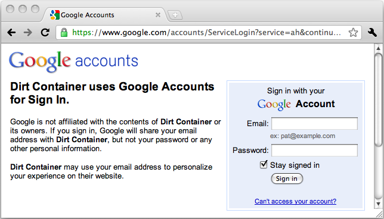
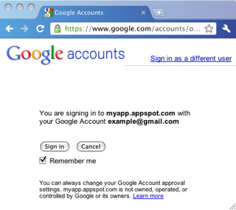

This page tells you how to get the Google Account identity of a user, using Google's OpenID endpoint. You need this identity if you support Chrome Web Store Payments, because payment information is tied to the user's Google Account.
Even if you don't use Chrome Web Store Payments, consider using Google Accounts if your app needs a login system. Google Accounts can help you provide a better user experience, since users of the Chrome Web Store are likely to be logged in already, and they won't have to set up and remember yet another username and password.
The following table summarizes when you should support Google Account logins using OpenID.
| App cost | Payment plan/system | Support for Google Accounts (using OpenID) |
|---|---|---|
| Paid | Chrome Web Store Payment System | Required The Licensing API relies on Google Account user IDs. |
| Paid | Custom payment solution | Recommended Users from the Chrome Web Store will have a better experience if you support the Google Account that they're already logged into. |
| Free | You might charge for the app in the future | Recommended Supporting Google Accounts might make adding payments simpler. |
| Free | No plans to charge for the app in the future | Optional If you want to identify individual users, Google Accounts are a reasonable way to do so. |
To get the user's OpenID URL, you query Google's OpenID service. If the user isn't already logged in, the user will be prompted to sign in with a Google-provided login page or popup.
Note: The OpenID URL is unique for a specific Google Account and a specific app. If you publish multiple apps, the same user will have a different OpenID URL for each app.
Here's what the login page looks like. Note that it has a Google URL, not a URL from the app's site:

If you're writing a hosted app with Google App Engine, supporting Google Accounts is easy. You just use the default Google Accounts API authentication and the Users service. For details, see the user authentication docs (for Java or Python). Here's an example (taken from the Licensing API tutorial's HelloLicenseServlet.java file) of the code you use to get the current user's OpenID URL if you're implementing a Java app with Google App Engine:
UserService userService = UserServiceFactory.getUserService();
if (userService.isUserLoggedIn()) {
User user = userService.getCurrentUser();
/* ...Do something with user.getFederatedIdentity(), which is the OpenID URL. */
}
If you aren't using Google App Engine,
you can get the Google OpenID endpoint
by sending a request to
https://www.google.com/accounts/o8/id.
See Federated Login for Google Account Users
for details.
 Normally, the first time your app uses the Google OpenID endpoint to authenticate a particular user, the user must approve your access to their account. To the right, you can see a typical OpenID approval screen.
Your users will have a better experience if they never see the approval screen. The screen is skipped if both of the following are true:
openid.realm field in your authentication requests.
If your app's code doesn't specify the value of
the openid.realm parameter,
look at your OpenID library
to see how it sets that value.
For details on how openid.realm is used, see
Request parameters in the Google OpenID documentation.
You should use an existing OpenID library rather than implement your own. In addition to Google App Engine's Users service, you can find OpenID libraries in a number of languages. Here are a few libraries we've used:
You can find more libraries at Janrain's OpenID Enabled, and a full list at the OpenID Foundation.
The following pages have detailed explanations of how to use OpenID with Google Accounts:
If you're using the Licensing API, your next stop is Checking for Payment. Otherwise, go on to Supplying Images.